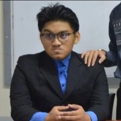

Aaron Jan O. Inlayo
Aaron Jan Inlayo is a computer engineering student in Technological Institute of the Philippines and now taking system administration as his elective. He went to Our Lady of Peace School when he was in Highschool and took the STEM strand.
He is 21 a years old who lives in Antipolo City with his grandmother. His parents are Amador Inlayo and Grace Inlayo. Amador is an Artist and Grace is a call center agent in Singapore. His 18 years old brother is Gabriel Jan Inlayo who is still a student at Our Lady of Peace School.
His Inspiration in pursuing computer engineering are his uncles who are also computer engineers, it also serves as his role model. Aaron is not fond of coding from scratch so he very much appreciates the elective system administration.